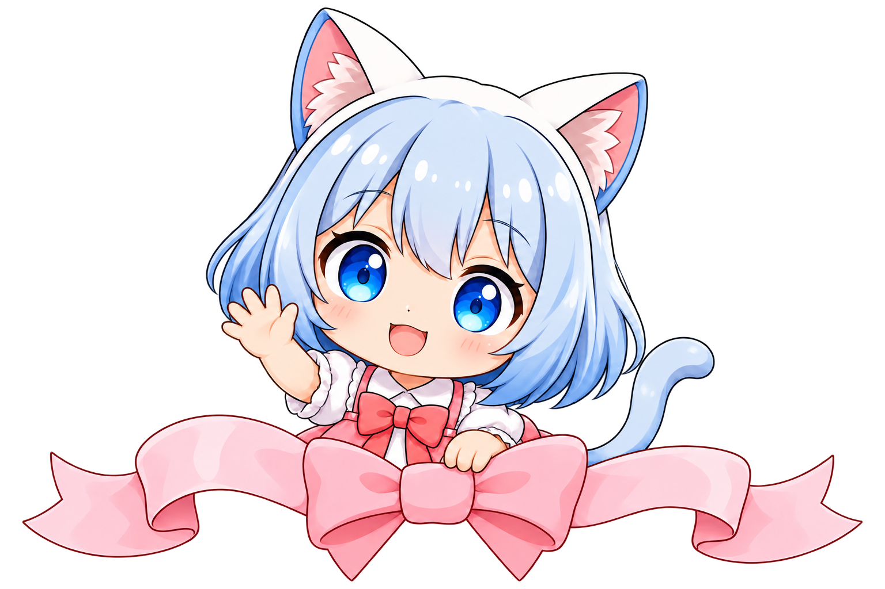
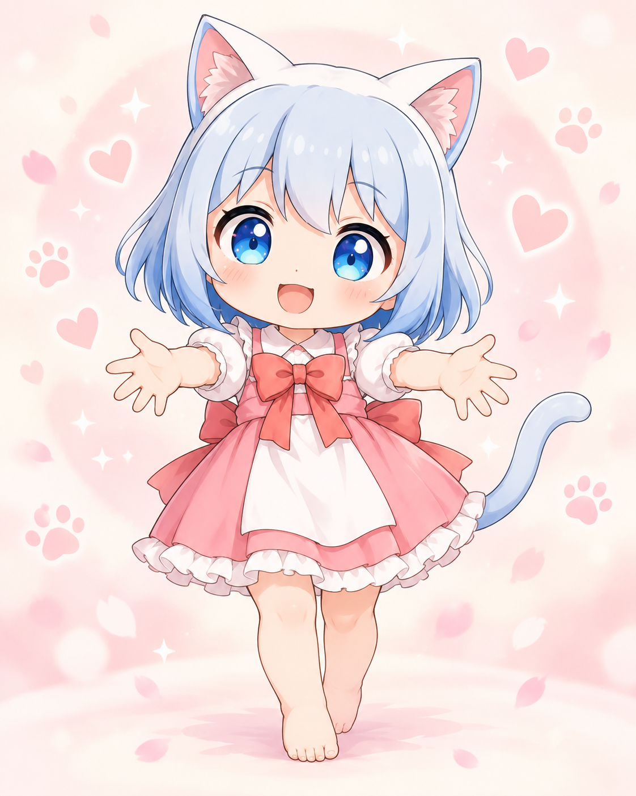
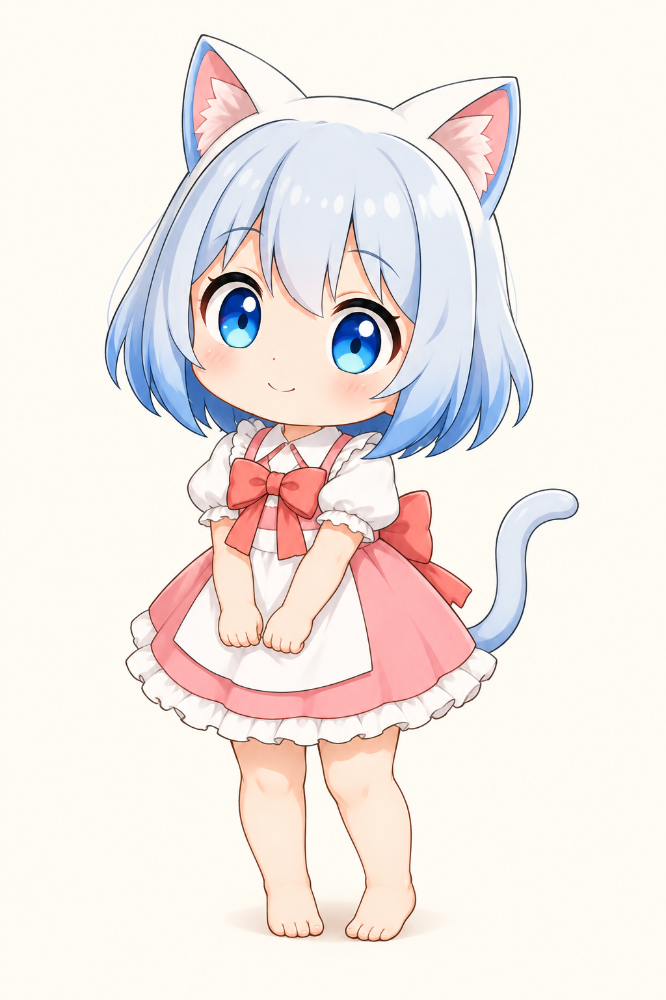

01 / SMILE
つられて、にっこり。
目をきゅっと細めた、うれしい笑顔。
見ているこっちまで、ほっぺがゆるむ。

ちび猫ちゃんOFFICIAL WEBSITE
CHIBI NEKOCHAN
ちいさな、ねこちゃんのような女の子。
いつも一緒にいたくなる、
やさしくて甘えんぼうな女の子。


ABOUT
ちいさな、ねこちゃんの
ような女の子。
銀青のボブに白いねこ耳、
きらきらした青い瞳。
赤いリボンとピンクのワンピースが
ちび猫ちゃんのトレードマークです。
好奇心いっぱいで、ちょっぴり不器用。
がんばってみたり、転んでみたり、
ときどき小さな事件を起こしてみたり。
言葉は少なくても、
表情やしぐさで気持ちを伝えてくれます。
いつもの一日に、
ほんの少しだけ「かわいい」を増やしてくれる。
それが、ちび猫ちゃんです。
LITTLE MOMENTS
にっこりしたり、びっくりしたり。
どんな顔も、そばで見ていたくなる。
目をきゅっと細めた、うれしい笑顔。
見ているこっちまで、ほっぺがゆるむ。
まんまるな青い瞳に、小さなおくち。
びっくりした顔にも、きゅん。
手のひらにちょこんとおさまる、ちいさな存在。
そっと包んで、ずっと一緒に。
Creator
たまごぼーろ
CHIBI NEKOCHAN
OFFICIAL WEBSITE
FOLLOW
ちび猫ちゃんに、会いにきてね。
ちび猫ちゃんは、たまごぼーろのSNSで活躍中。